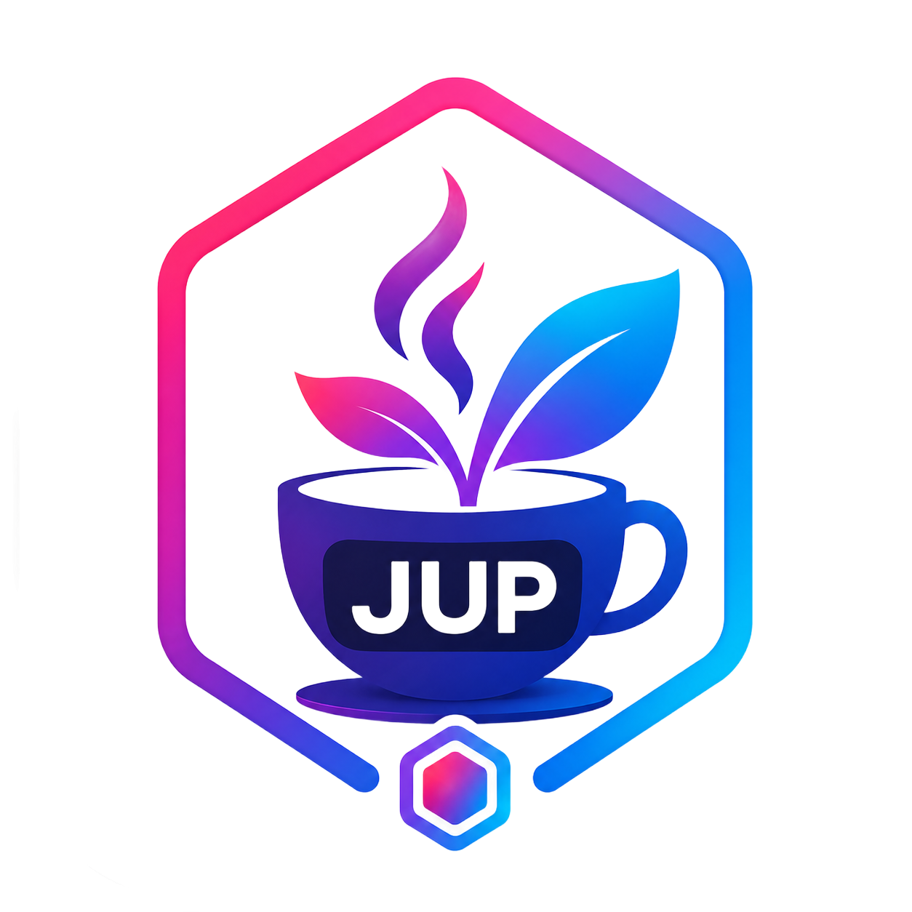
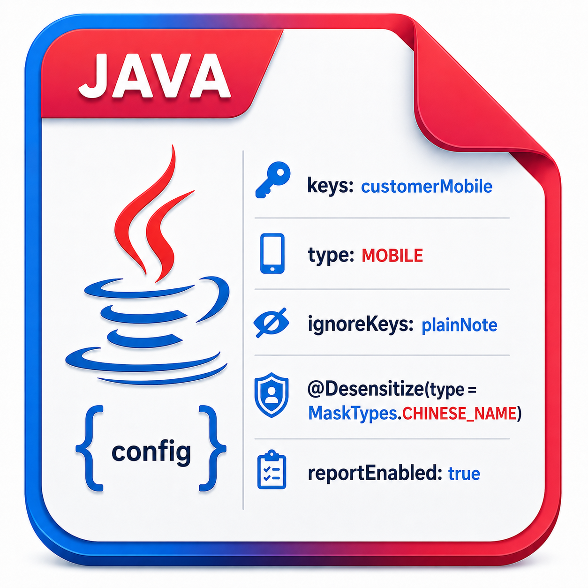

<template id="scene-002-template">
  <div id="scene-002" class="scene-root scene-002" data-composition-id="scene-002" data-width="1920" data-height="1080" data-start="0" data-duration="37.5">
    <section id="s2-title" class="cc-title-transition cc-title-transition--teal cc-title-transition--static chapter-beat" data-component="TitleTransition" data-layout-allow-overlap>
      <h1 class="cc-title-transition__text">接入篇</h1>
      <div class="chapter-rule"></div>
    </section>

    <main id="s2-body" class="concept-stage" style="opacity: 0;" data-layout-ignore>
      <div class="concept-zones" aria-hidden="true" data-layout-ignore>
        <div class="concept-zone concept-zone--left"></div>
        <div class="concept-zone concept-zone--center"></div>
        <div class="concept-zone concept-zone--right"></div>
      </div>

      <svg id="s2-flow-lines" class="flow-lines" viewBox="0 0 1920 1080" aria-hidden="true" data-layout-ignore>
        <defs>
          <marker id="s2-arrow-head" markerWidth="16" markerHeight="16" refX="12" refY="8" orient="auto" markerUnits="strokeWidth">
            <path d="M 2 2 L 14 8 L 2 14" fill="none" stroke="#2c9a9a" stroke-width="3" stroke-linecap="round" stroke-linejoin="round"></path>
          </marker>
        </defs>
        <path id="s2-entry-arrow" class="flow-path" d="M 1450 548 C 1370 548, 1320 520, 1260 486" marker-end="url(#s2-arrow-head)"></path>
      </svg>

      <section id="s2-project" class="project-concept" aria-label="Spring Boot 项目">
        
        <div class="project-concept__label">Spring Boot 项目</div>
      </section>

      <section id="s2-plug" class="enhancer-badge" aria-label="接入组件">
        
      </section>

      <section id="s2-terminal" class="config-terminal" aria-label="日志格式配置">
        <div class="config-terminal__bar" aria-hidden="true">
          <span></span>
          <span></span>
          <span></span>
        </div>
        <pre id="s2-config-code" class="config-terminal__code">&lt;PatternLayout pattern="%d{HH:mm:ss.SSS} %-5level %logger{36} - %safeOutputMsg%n"/&gt;</pre>
      </section>

      <section id="s2-entry-actions" class="entry-actions" aria-label="接入动作">
        <div class="entry-action-label cc-stack-label cc-stack-label--blue-light cc-stack-label--md">组件依赖</div>
        <div class="entry-action-label cc-stack-label cc-stack-label--teal-light cc-stack-label--md">少量配置</div>
      </section>

      <section id="s2-result" class="result-frame" aria-label="低侵入接入结果">
        <div class="result-frame__badge">低侵入接入</div>
        <div id="s2-row-controller" class="result-row">
          <div class="cc-stack-label cc-stack-label--teal-light cc-stack-label--md result-label">Controller 不改</div>
          <span id="s2-check-controller" class="cc-check-badge cc-check-badge--green cc-check-badge--md result-check">
            <svg class="cc-check-badge__icon" viewBox="0 0 64 64" fill="none" role="img" aria-label="Controller 不改">
              <path class="cc-check-badge__mark" d="M18 33.5L28.5 44L47 21"></path>
            </svg>
          </span>
        </div>
        <div id="s2-row-return" class="result-row">
          <div class="cc-stack-label cc-stack-label--teal-light cc-stack-label--md result-label">返回对象不改</div>
          <span id="s2-check-return" class="cc-check-badge cc-check-badge--green cc-check-badge--md result-check">
            <svg class="cc-check-badge__icon" viewBox="0 0 64 64" fill="none" role="img" aria-label="返回对象不改">
              <path class="cc-check-badge__mark" d="M18 33.5L28.5 44L47 21"></path>
            </svg>
          </span>
        </div>
      </section>

      <section id="s2-left-stack" class="cc-stack-frame cc-stack-frame--blue left-stack-frame" aria-label="接入后统一覆盖入口">
        <div class="cc-stack-frame__body">
          <div id="s2-left-controller" class="left-stack-row">
            <div class="cc-stack-label cc-stack-label--teal-light cc-stack-label--md left-stack-label">Controller 不改</div>
            <span id="s2-left-check-controller" class="cc-check-badge cc-check-badge--green cc-check-badge--md left-stack-check">
              <svg class="cc-check-badge__icon" viewBox="0 0 64 64" fill="none" role="img" aria-label="Controller 不改">
                <path class="cc-check-badge__mark" d="M18 33.5L28.5 44L47 21"></path>
              </svg>
            </span>
          </div>
          <div id="s2-left-return" class="left-stack-row">
            <div class="cc-stack-label cc-stack-label--teal-light cc-stack-label--md left-stack-label">返回对象不改</div>
            <span id="s2-left-check-return" class="cc-check-badge cc-check-badge--green cc-check-badge--md left-stack-check">
              <svg class="cc-check-badge__icon" viewBox="0 0 64 64" fill="none" role="img" aria-label="返回对象不改">
                <path class="cc-check-badge__mark" d="M18 33.5L28.5 44L47 21"></path>
              </svg>
            </span>
          </div>
          <div id="s2-source-log" class="left-stack-row">
            <div class="cc-stack-label cc-stack-label--blue-light cc-stack-label--md left-stack-label">日志格式</div>
            <span id="s2-check-log" class="cc-check-badge cc-check-badge--green cc-check-badge--md left-stack-check">
              <svg class="cc-check-badge__icon" viewBox="0 0 64 64" fill="none" role="img" aria-label="日志格式已接入">
                <path class="cc-check-badge__mark" d="M18 33.5L28.5 44L47 21"></path>
              </svg>
            </span>
          </div>
          <div id="s2-source-export" class="left-stack-row">
            <div class="cc-stack-label cc-stack-label--blue-light cc-stack-label--md left-stack-label">导出场景</div>
            <span id="s2-check-export" class="cc-check-badge cc-check-badge--green cc-check-badge--md left-stack-check">
              <svg class="cc-check-badge__icon" viewBox="0 0 64 64" fill="none" role="img" aria-label="导出场景已接入">
                <path class="cc-check-badge__mark" d="M18 33.5L28.5 44L47 21"></path>
              </svg>
            </span>
          </div>
          <div id="s2-source-message" class="left-stack-row">
            <div class="cc-stack-label cc-stack-label--blue-light cc-stack-label--md left-stack-label">消息发送</div>
            <span id="s2-check-message" class="cc-check-badge cc-check-badge--green cc-check-badge--md left-stack-check">
              <svg class="cc-check-badge__icon" viewBox="0 0 64 64" fill="none" role="img" aria-label="消息发送已接入">
                <path class="cc-check-badge__mark" d="M18 33.5L28.5 44L47 21"></path>
              </svg>
            </span>
          </div>
        </div>
      </section>

      <div id="s2-unified-box" class="unified-box" aria-hidden="true"></div>
      
    </main>

    <div class="caption" data-layout-allow-overlap>接入方式很简单</div>
    <div class="caption" data-layout-allow-overlap>引入依赖并完成少量配置即可开启接口脱敏</div>
    <div class="caption" data-layout-allow-overlap>不需要逐个修改 Controller 和返回对象</div>
    <div class="caption" data-layout-allow-overlap>日志、导出和消息场景也能按需接入</div>
    <div class="caption" data-layout-allow-overlap>所有入口背后执行同一套脱敏规则</div>

    <style>
      @import url("../src/styles/runtime.css");
      @import url("../src/components/TitleTransition/styles.css");
      @import url("../src/components/StackFrame/styles.css");
      @import url("../src/components/StackLabel/styles.css");
      @import url("../src/components/CheckBadge/styles.css");

      #scene-002 {
        background: #f7f8fa;
      }

      #scene-002::before {
        opacity: 0.48;
      }

      #scene-002 * {
        box-sizing: border-box;
      }

      #scene-002 .concept-stage {
        --concept-left-width: 25%;
        --concept-center-width: 50%;
        --concept-right-width: 25%;
        --concept-top-padding: 238px;
        --concept-bottom-padding: 238px;
        position: relative;
        width: 100%;
        height: 100%;
        overflow: hidden;
      }

      #scene-002 .concept-zones {
        position: absolute;
        z-index: 0;
        inset: 0;
        display: grid;
        grid-template-columns:
          var(--concept-left-width)
          var(--concept-center-width)
          var(--concept-right-width);
        padding-top: var(--concept-top-padding);
        padding-bottom: var(--concept-bottom-padding);
        pointer-events: none;
      }

      #scene-002 .concept-zone {
        min-width: 0;
        min-height: 0;
      }

      #scene-002 .concept-stage::after {
        content: "";
        position: absolute;
        z-index: 0;
        top: 208px;
        left: 50%;
        width: 920px;
        height: 720px;
        border-radius: 50%;
        background: radial-gradient(circle, rgba(44, 154, 154, 0.11), rgba(44, 154, 154, 0) 68%);
        transform: translateX(-50%);
        pointer-events: none;
      }

      #scene-002 .flow-lines {
        position: absolute;
        z-index: 5;
        inset: 0;
        width: 100%;
        height: 100%;
        overflow: visible;
        pointer-events: none;
      }

      #scene-002 .flow-path {
        fill: none;
        stroke: #2c9a9a;
        stroke-width: 6;
        stroke-linecap: round;
        stroke-dasharray: 420;
        stroke-dashoffset: 420;
        opacity: 0;
      }

      #scene-002 .project-concept {
        position: absolute;
        z-index: 3;
        top: 238px;
        left: 560px;
        display: grid;
        width: 800px;
        height: 440px;
        align-content: center;
        justify-items: center;
        opacity: 0;
        transform-origin: center center;
      }

      #scene-002 .project-concept__icon {
        display: block;
        width: 520px;
        height: 338px;
        object-fit: contain;
        filter: drop-shadow(0 22px 32px rgba(47, 111, 143, 0.16));
      }

      #scene-002 .project-concept__label {
        margin-top: 16px;
        padding: 10px 28px;
        border: 2px solid rgba(47, 111, 143, 0.18);
        border-radius: 999px;
        background: rgba(255, 255, 255, 0.82);
        color: #233b5e;
        font-size: 32px;
        font-weight: 600;
        line-height: 1.1;
      }

      #scene-002 .enhancer-badge {
        position: absolute;
        z-index: 7;
        top: 246px;
        right: 172px;
        display: grid;
        place-items: center;
        width: 250px;
        height: 250px;
        padding: 18px;
        border-radius: 28px;
        background: #ffffff;
        box-shadow: 0 18px 34px rgba(35, 59, 94, 0.16);
        opacity: 0;
        transform-origin: center center;
      }

      #scene-002 .enhancer-badge img {
        display: block;
        width: 100%;
        height: 100%;
        object-fit: contain;
      }

      #scene-002 .config-terminal {
        position: absolute;
        z-index: 6;
        top: 550px;
        right: 58px;
        width: 600px;
        height: 210px;
        overflow: hidden;
        border: 2px solid rgba(31, 41, 51, 0.2);
        border-radius: 16px;
        background: #1f2933;
        box-shadow: 0 24px 44px rgba(35, 59, 94, 0.16);
        opacity: 0;
        transform-origin: left top;
      }

      #scene-002 .config-terminal__bar {
        display: flex;
        align-items: center;
        gap: 8px;
        height: 42px;
        padding: 0 18px;
        border-bottom: 1px solid rgba(229, 231, 235, 0.1);
        background: rgba(15, 23, 31, 0.42);
      }

      #scene-002 .config-terminal__bar span {
        width: 12px;
        height: 12px;
        border-radius: 50%;
        background: #ef7b85;
      }

      #scene-002 .config-terminal__bar span:nth-child(2) {
        background: #ffe08a;
      }

      #scene-002 .config-terminal__bar span:nth-child(3) {
        background: #3caea3;
      }

      #scene-002 .config-terminal__code {
        margin: 0;
        padding: 24px 22px;
        color: #e5e7eb;
        font-family: "JetBrains Mono", Menlo, monospace;
        font-size: 18px;
        font-weight: 400;
        line-height: 1.45;
        white-space: pre-wrap;
        overflow-wrap: anywhere;
      }

      #scene-002 .code-char {
        opacity: 0;
      }

      #scene-002 .entry-actions {
        position: absolute;
        z-index: 5;
        top: 438px;
        right: 78px;
        display: grid;
        width: 360px;
        gap: 18px;
        opacity: 0;
        transform-origin: center center;
      }

      #scene-002 .entry-action-label {
        display: grid;
        place-items: center;
        width: 360px;
        min-width: 0;
        min-height: 82px;
        font-size: 36px;
        text-align: center;
      }

      #scene-002 .result-frame {
        position: absolute;
        z-index: 4;
        top: 322px;
        left: 650px;
        display: grid;
        width: 620px;
        gap: 22px;
        justify-items: center;
        opacity: 0;
        transform-origin: center center;
      }

      #scene-002 .result-frame__badge {
        padding: 10px 28px;
        border-radius: 999px;
        background: rgba(44, 154, 154, 0.12);
        color: #2c9a9a;
        font-size: 28px;
        font-weight: 600;
      }

      #scene-002 .result-row {
        position: relative;
        display: grid;
        width: 520px;
        opacity: 0;
        transform-origin: center center;
      }

      #scene-002 .result-label {
        display: grid;
        place-items: center;
        width: 520px;
        min-width: 0;
        min-height: 88px;
        padding-right: 86px;
        font-size: 38px;
        text-align: center;
      }

      #scene-002 .result-check {
        position: absolute;
        top: 50%;
        right: 16px;
        translate: 0 -50%;
        opacity: 0;
        transform-origin: center center;
      }

      #scene-002 .result-check .cc-check-badge__mark {
        stroke-dashoffset: 48;
      }

      #scene-002 .left-stack-frame {
        --s2-left-label-width: 390px;
        --s2-left-frame-extra-width: 78px;
        position: absolute;
        z-index: 4;
        top: 182px;
        left: 42px;
        width: calc(var(--s2-left-label-width) + var(--s2-left-frame-extra-width));
        min-width: 0;
        opacity: 0;
        transform-origin: center center;
      }

      #scene-002 .left-stack-frame .cc-stack-frame__body {
        width: calc(var(--s2-left-label-width) + var(--s2-left-frame-extra-width));
        padding: 30px 34px;
        gap: 14px;
        border: 5px solid transparent;
        border-radius: 32px;
        background: transparent;
        box-shadow: none;
      }

      #scene-002 .left-stack-row {
        position: relative;
        display: grid;
        width: var(--s2-left-label-width);
        opacity: 0;
        transform-origin: center center;
      }

      #scene-002 .left-stack-label {
        display: grid;
        place-items: center;
        width: var(--s2-left-label-width);
        min-width: 0;
        min-height: 78px;
        padding-right: 76px;
        font-size: 32px;
        text-align: center;
        white-space: nowrap;
      }

      #scene-002 .left-stack-check {
        position: absolute;
        top: 50%;
        right: 12px;
        width: 58px;
        translate: 0 -50%;
        opacity: 0;
        transform-origin: center center;
      }

      #scene-002 .left-stack-check .cc-check-badge__mark {
        stroke-dashoffset: 48;
      }

      #scene-002 .unified-box {
        position: absolute;
        z-index: 2;
        top: 226px;
        left: 42px;
        width: 1366px;
        height: 642px;
        border: 5px solid rgba(44, 154, 154, 0.76);
        border-radius: 42px;
        background: rgba(255, 255, 255, 0.22);
        box-shadow: 0 24px 60px rgba(47, 111, 143, 0.1);
        opacity: 0;
        transform-origin: center center;
        pointer-events: none;
      }

      #scene-002 .config-art {
        position: absolute;
        z-index: 6;
        top: 346px;
        right: 112px;
        width: 310px;
        height: 310px;
        object-fit: contain;
        opacity: 0;
        transform-origin: center center;
        filter: drop-shadow(0 20px 30px rgba(35, 59, 94, 0.14));
      }

      #scene-002 .caption {
        z-index: 8;
      }
    </style>

    <script src="https://cdn.jsdelivr.net/npm/gsap@3.14.2/dist/gsap.min.js"></script>
    <script>
      window.__timelines = window.__timelines || {};
      var tl = gsap.timeline({ paused: true });
      var captions = document.querySelectorAll("#scene-002 .caption");
      var configCode = document.querySelector("#s2-config-code");
      var configChars = [];

      function wrapCodeChars(node) {
        if (node.nodeType === Node.TEXT_NODE) {
          var fragment = document.createDocumentFragment();
          node.textContent.split("").forEach(function (char) {
            var span = document.createElement("span");
            span.className = "code-char";
            span.textContent = char;
            configChars.push(span);
            fragment.appendChild(span);
          });
          node.parentNode.replaceChild(fragment, node);
          return;
        }

        Array.prototype.slice.call(node.childNodes).forEach(wrapCodeChars);
      }

      wrapCodeChars(configCode);

      tl.fromTo("#s2-title .cc-title-transition__text", { opacity: 0, x: -150, scale: 0.94 }, { opacity: 1, x: 0, scale: 1, duration: 0.68, ease: "expo.out" }, 0.2);
      tl.fromTo("#s2-title .chapter-rule", { scaleX: 0 }, { scaleX: 1, duration: 0.5, ease: "power3.out" }, 0.46);
      tl.to("#s2-title", { opacity: 0, duration: 0.28, ease: "power2.in" }, 2.18);

      tl.fromTo("#s2-body", { opacity: 0 }, { opacity: 1, duration: 0.35, ease: "power2.out" }, 2.3);
      tl.fromTo("#s2-project", { opacity: 0, scale: 0.82 }, { opacity: 1, scale: 1, duration: 0.7, ease: "back.out(1.25)", immediateRender: false }, 2.7);
      tl.to("#s2-project", { scale: 1.025, duration: 0.45, ease: "sine.inOut", yoyo: true, repeat: 1 }, 5.7);

      tl.fromTo("#s2-plug", { opacity: 0, x: 38, y: -18, scale: 0.8 }, { opacity: 1, x: 0, y: 0, scale: 1, duration: 0.45, ease: "back.out(1.2)", immediateRender: false }, 7);
      tl.fromTo("#s2-terminal", { opacity: 0, y: 28, scale: 0.96 }, { opacity: 1, y: 0, scale: 1, duration: 0.5, ease: "power3.out", immediateRender: false }, 7.35);
      tl.to(configChars, { opacity: 1, duration: 0.01, stagger: { each: 3 / Math.max(configChars.length - 1, 1) }, ease: "none" }, 8.05);
      tl.to("#s2-plug", { x: -526, y: 154, scale: 0.42, opacity: 0, duration: 0.82, ease: "expo.inOut" }, 11.35);
      tl.to("#s2-terminal", { x: -650, y: -34, scale: 0.16, opacity: 0, duration: 0.82, ease: "expo.inOut" }, 11.35);
      tl.to("#s2-project", { scale: 1.04, duration: 0.28, ease: "sine.inOut", yoyo: true, repeat: 1 }, 11.78);
      tl.fromTo("#s2-entry-actions", { opacity: 0, x: 36, scale: 0.96 }, { opacity: 1, x: 0, scale: 1, duration: 0.48, ease: "power3.out", immediateRender: false }, 12.35);
      tl.to("#s2-entry-arrow", { opacity: 1, strokeDashoffset: 0, duration: 0.55, ease: "power2.out" }, 12.68);
      tl.to("#s2-entry-actions, #s2-entry-arrow", { opacity: 0, duration: 0.38, ease: "power2.in", overwrite: "auto" }, 15.05);

      tl.to("#s2-project", { opacity: 0.28, scale: 0.88, duration: 0.45, ease: "power2.inOut" }, 15.5);
      tl.fromTo("#s2-result", { opacity: 0, scale: 0.92 }, { opacity: 1, scale: 1, duration: 0.55, ease: "power3.out", immediateRender: false }, 15.65);
      tl.fromTo("#s2-row-controller", { opacity: 0, y: 24, scale: 0.96 }, { opacity: 1, y: 0, scale: 1, duration: 0.42, ease: "power3.out", immediateRender: false }, 16.25);
      tl.fromTo("#s2-check-controller", { opacity: 0, scale: 0.72 }, { opacity: 1, scale: 1, duration: 0.32, ease: "back.out(1.35)", immediateRender: false }, 16.57);
      tl.to("#s2-check-controller .cc-check-badge__mark", { strokeDashoffset: 0, duration: 0.5, ease: "power2.out", overwrite: "auto" }, 16.67);
      tl.fromTo("#s2-row-return", { opacity: 0, y: 24, scale: 0.96 }, { opacity: 1, y: 0, scale: 1, duration: 0.42, ease: "power3.out", immediateRender: false }, 18.55);
      tl.fromTo("#s2-check-return", { opacity: 0, scale: 0.72 }, { opacity: 1, scale: 1, duration: 0.32, ease: "back.out(1.35)", immediateRender: false }, 18.87);
      tl.to("#s2-check-return .cc-check-badge__mark", { strokeDashoffset: 0, duration: 0.5, ease: "power2.out", overwrite: "auto" }, 18.97);
      tl.to("#s2-result .result-frame__badge", { opacity: 0, duration: 0.25, ease: "power1.inOut" }, 19.35);
      tl.to("#s2-result", { x: -594, y: -132, scale: 0.82, duration: 0.72, ease: "power3.inOut" }, 19.4);
      tl.to("#s2-project", { opacity: 1, scale: 1, duration: 0.58, ease: "power2.out" }, 19.45);
      tl.fromTo("#s2-left-stack", { opacity: 0 }, { opacity: 1, duration: 0.12, ease: "none", immediateRender: false }, 20.08);
      tl.to("#s2-left-controller, #s2-left-return", { opacity: 1, duration: 0.12, ease: "none" }, 20.08);
      tl.to("#s2-left-check-controller, #s2-left-check-return", { opacity: 1, duration: 0.12, ease: "none" }, 20.08);
      tl.to("#s2-left-check-controller .cc-check-badge__mark, #s2-left-check-return .cc-check-badge__mark", { strokeDashoffset: 0, duration: 0.01, ease: "none" }, 20.08);
      tl.to("#s2-result", { opacity: 0, duration: 0.12, ease: "none" }, 20.12);

      tl.fromTo("#s2-source-log", { opacity: 0, y: 24 }, { opacity: 1, y: 0, duration: 0.42, ease: "power2.out", immediateRender: false }, 22.5);
      tl.fromTo("#s2-check-log", { opacity: 0, scale: 0.72 }, { opacity: 1, scale: 1, duration: 0.32, ease: "back.out(1.35)", immediateRender: false }, 22.82);
      tl.to("#s2-check-log .cc-check-badge__mark", { strokeDashoffset: 0, duration: 0.5, ease: "power2.out", overwrite: "auto" }, 22.92);
      tl.to("#s2-source-log", { scale: 1.04, duration: 0.3, ease: "power2.out", overwrite: "auto" }, 23.35);
      tl.to("#s2-source-log", { scale: 1, duration: 0.3, ease: "power1.inOut", overwrite: "auto" }, 24.05);
      tl.fromTo("#s2-source-export", { opacity: 0, y: 24 }, { opacity: 1, y: 0, duration: 0.42, ease: "circ.out", immediateRender: false }, 24.6);
      tl.fromTo("#s2-check-export", { opacity: 0, scale: 0.72 }, { opacity: 1, scale: 1, duration: 0.32, ease: "back.out(1.35)", immediateRender: false }, 24.92);
      tl.to("#s2-check-export .cc-check-badge__mark", { strokeDashoffset: 0, duration: 0.5, ease: "power2.out", overwrite: "auto" }, 25.02);
      tl.to("#s2-source-export", { scale: 1.04, duration: 0.3, ease: "power2.out", overwrite: "auto" }, 25.45);
      tl.to("#s2-source-export", { scale: 1, duration: 0.3, ease: "power1.inOut", overwrite: "auto" }, 26.15);
      tl.fromTo("#s2-source-message", { opacity: 0, y: 24 }, { opacity: 1, y: 0, duration: 0.42, ease: "expo.out", immediateRender: false }, 26.7);
      tl.fromTo("#s2-check-message", { opacity: 0, scale: 0.72 }, { opacity: 1, scale: 1, duration: 0.32, ease: "back.out(1.35)", immediateRender: false }, 27.02);
      tl.to("#s2-check-message .cc-check-badge__mark", { strokeDashoffset: 0, duration: 0.5, ease: "power2.out", overwrite: "auto" }, 27.12);
      tl.to("#s2-source-message", { scale: 1.04, duration: 0.3, ease: "power2.out", overwrite: "auto" }, 27.55);
      tl.to("#s2-source-message", { scale: 1, duration: 0.3, ease: "power1.inOut", overwrite: "auto" }, 28.25);
      tl.to("#s2-left-stack .cc-stack-frame__body", { borderColor: "#233b5e", backgroundColor: "#ffffff", boxShadow: "0 20px 42px rgba(47, 111, 143, 0.12)", duration: 0.5, ease: "power2.out" }, 28.85);

      tl.to("#s2-left-stack", { x: 118, duration: 0.72, ease: "power3.inOut" }, 30.4);
      tl.fromTo("#s2-unified-box", { opacity: 0, scale: 0.985 }, { opacity: 1, scale: 1, duration: 0.55, ease: "power2.out", immediateRender: false }, 30.55);
      tl.fromTo("#s2-config-art", { opacity: 1, x: 0, y: 0, scale: 1 }, { x: -565, y: 30, scale: 0.34, opacity: 0, duration: 3, ease: "power3.inOut", immediateRender: false }, 34.4);
      tl.to("#s2-unified-box", { borderColor: "rgba(60, 174, 163, 0.95)", duration: 0.6, ease: "sine.inOut", yoyo: true, repeat: 1 }, 33.1);

      [[0, 2.7, 6.7], [1, 7, 15.2], [2, 15.5, 22.2], [3, 22.5, 29.7], [4, 30, 37.1]].forEach(function (item) {
        tl.fromTo(captions[item[0]], { opacity: 0, y: 12 }, { opacity: 1, y: 0, duration: 0.3, ease: "power2.out", overwrite: "auto", immediateRender: false }, item[1]);
        tl.to(captions[item[0]], { opacity: 0, duration: 0.22, ease: "power2.in", overwrite: "auto" }, item[2]);
      });

      window.__timelines["scene-002"] = tl;
    </script>
  </div>
</template>
